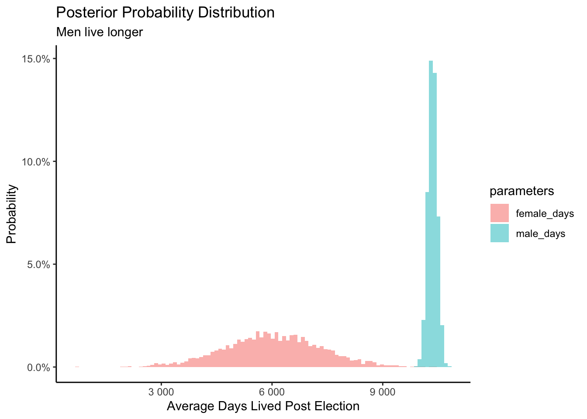
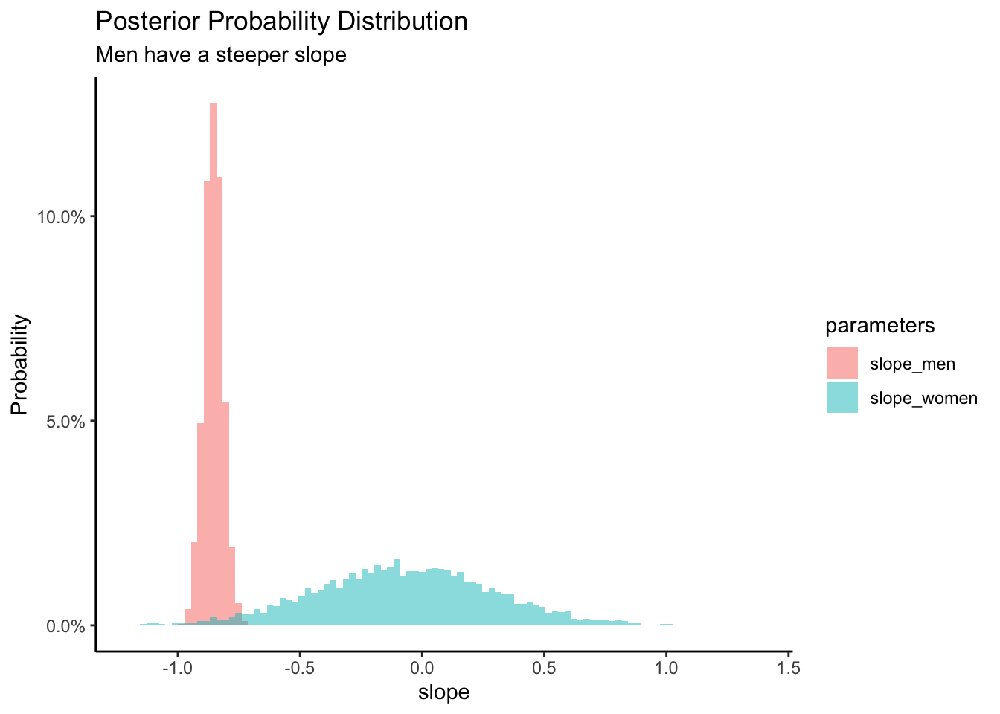

Chapter 9 N Parameters
This chapter is a draft. Come back in a few weeks for a better version.
Having created models with one parameter in Chapter 6, two parameters in Chapter 7 and three parameters in Chapter 8, you are now ready to make the jump to \(N\) parameters.
In this chapter, we will consider models with multiple parameters and the complexities that arise from these additions.
9.1 EDA of governors
Begin by loading the packages which we need.
We will start off by using a subset of the governors data set from the PPBDS.data package. This data set looks at the lifespans of U.S. politicians from 1945 to 2012. It comes from the paper “Longevity Returns to Political Office” by Barfort, Klemmensen & Larsen (2019), and aims to find out whether winning an election influences the lifespan of candidates for governor.
Let’s explore the variables and observations contained within this data set by performing an exploratory data analysis.
## Rows: 1,092
## Columns: 11
## $ state <chr> "Alabama", "Alabama", "Alabama", "Alabama", "Alabama", "Al…
## $ year <int> 1946, 1946, 1950, 1954, 1954, 1958, 1962, 1966, 1966, 1970…
## $ first_name <chr> "James", "Lyman", "Gordon", "Tom", "James", "William", "Ge…
## $ last_name <chr> "Folsom", "Ward", "Persons", "Abernethy", "Folsom", "Longs…
## $ party <chr> "Democrat", "Republican", "Democrat", "Republican", "Democ…
## $ sex <chr> "Male", "Male", "Male", "Male", "Male", "Male", "Male", "M…
## $ died <date> 1987-11-21, 1948-12-17, 1965-05-29, 1968-03-07, 1987-11-2…
## $ status <chr> "Challenger", "Challenger", "Challenger", "Challenger", "C…
## $ win_margin <dbl> 77.3, -77.3, 82.2, -46.7, 46.7, -77.5, 100.0, -34.3, 34.3,…
## $ alive_post <int> 14991, 773, 5319, 4871, 12069, 19924, 13096, 18622, 549, 1…
## $ alive_pre <int> 13906, 28690, 17805, 17001, 16828, 12152, 15778, 17597, 14…There are 11 variables and 1,092 observations. In this chapter, we will only be looking at the variables last_name, year, state, sex, status, alive_post, and alive_pre. We will also create a new variable called won that is TRUE when the win margin is greater than 0, and FALSE if not.
ch9_gov <- governors %>%
mutate(won = ifelse(win_margin > 0, TRUE, FALSE)) %>%
select(last_name, year, state, sex, status, won, alive_post, alive_pre)There are a few things to note when looking at this data. First, the data set includes the variables alive_pre and alive_post, which tell us how many days a candidate lived before the election took place and how many days a candidate lived after the election, respectively. Therefore, only politicians who are already deceased are included in this data set. Furthermore, candidates with unknown dates of death were not included. This means that there are only a handful of observations from elections in the last 20 years. Most candidates are still alive.
Another caveat is that for a given election, only the top two candidates are included in the data set. If a politician did not receive the highest or second-highest number of votes, they are excluded.
Finally, it is noted that for some observations, only the birth or death year of a candidate could be determined, in which case the date was taken as July 1st of that year.
Let’s run sample_n():
## # A tibble: 10 x 8
## last_name year state sex status won alive_post alive_pre
## <chr> <int> <chr> <chr> <chr> <lgl> <int> <int>
## 1 Taft 1976 Rhode Island Male Challenger FALSE 12722 16564
## 2 Metzger 1952 Colorado Male Challenger FALSE 11403 15191
## 3 Bowen 1976 Indiana Male Incumbent TRUE 13329 21437
## 4 Sinner 1988 North Dakota Male Incumbent TRUE 10716 22085
## 5 Folmar 1982 Alabama Male Challenger FALSE 10598 19148
## 6 Melich 1964 Utah Male Challenger FALSE 12637 19271
## 7 Thornton 1952 Colorado Male Incumbent TRUE 8474 15254
## 8 Herring 1954 Iowa Male Challenger FALSE 7994 14471
## 9 Goddard 1966 Arizona Male Incumbent FALSE 14333 17256
## 10 Conrad 1976 Indiana Male Challenger FALSE 4992 15246From this sample, we can see some trends start to appear. For example, we see that sex is most often “Male”, and status is most often “Challenger” rather than “Incumbent”.
Let’s summarize the data with skim():
| Name | ch9_gov |
| Number of rows | 1092 |
| Number of columns | 8 |
| _______________________ | |
| Column type frequency: | |
| character | 4 |
| logical | 1 |
| numeric | 3 |
| ________________________ | |
| Group variables | None |
Variable type: character
| skim_variable | n_missing | complete_rate | min | max | empty | n_unique | whitespace |
|---|---|---|---|---|---|---|---|
| last_name | 0 | 1 | 3 | 11 | 0 | 615 | 0 |
| state | 0 | 1 | 4 | 14 | 0 | 50 | 0 |
| sex | 0 | 1 | 4 | 6 | 0 | 2 | 0 |
| status | 0 | 1 | 9 | 10 | 0 | 2 | 0 |
Variable type: logical
| skim_variable | n_missing | complete_rate | mean | count |
|---|---|---|---|---|
| won | 0 | 1 | 0.53 | TRU: 576, FAL: 516 |
Variable type: numeric
| skim_variable | n_missing | complete_rate | mean | sd | p0 | p25 | p50 | p75 | p100 | hist |
|---|---|---|---|---|---|---|---|---|---|---|
| year | 0 | 1 | 1965 | 13 | 1945 | 1954 | 1962 | 1974 | 2011 | ▇▆▃▂▁ |
| alive_post | 0 | 1 | 10310 | 4886 | 46 | 6419 | 10811 | 14124 | 22067 | ▃▆▇▆▂ |
| alive_pre | 0 | 1 | 18892 | 3181 | 11450 | 16561 | 18758 | 20996 | 30633 | ▂▇▆▂▁ |
This output groups the variables together by type (character, logical, numeric, etc.). From this, we can see things like the number of unique last names, how many of the observations in our subset won versus how many lost their elections, and the mean number of days before and after a gubernatorial election that a candidate lived. We are also given histograms of the numerical data. In looking at the histogram for year, we see that it is skewed right, with half of the observations from election years between 1945 and 1962. This makes sense logically, because we are only looking at deceased candidates, and candidates from more recent elections are more likely to still be alive.
In using this data set, our left-side variable will be alive_post. We want to know how the election affected the lifespan of these gubernatorial candidates. Let’s look at some graphs and plots showing the relationships between alive_post and some of the other variables in our subset.

Starting with the relationship between alive_post and year, we can see that the data is skewed right and that there is a defined line that data points do not exist above. There are no data points in the top right portion of the graph because it is not possible to have run in 2011, lived 20,000 days after the election took place, and still have died before the data set was created. This line represents the most a candidate could have possibly lived - and still have died - to be included the data set. The reason this line is slanted downward is because the maximum value for this scenario is greater in earlier years. That is, those candidates who ran for governor in earlier years could live a longer time after the election and still have died prior to the data set creation, giving them higher alive_post values than those who ran for office in later years.
There are fewer observations in later years because fewer candidates have died. The vast maajority of candidates who ran for office in the 21st century are still alive today and therefore excluded from this data set.

This box plot is interesting in that it takes a direct look at the relationship we are trying to learn more about: whether winning an election influences the lifespan of politicians.
9.2 Wisdom
 FIGURE 9.1: Wisdom
FIGURE 9.1: Wisdom
9.3 Justice and Courage
 FIGURE 9.2: Justice
FIGURE 9.2: Justice
 FIGURE 9.3: Courage
FIGURE 9.3: Courage
Because we will be going through a series of models in this chapter, it is useful to combine the virtues of Justice and Courage.
Let’s explore descriptive, not causal, models which seek to explain longevity post-election.
To begin, let’s model candidate lifespan after the election as a function of candidate lifespan prior to the election. The math is fairly simple:
\[ alive.post_i = \beta_0 + \beta_1 alive.pre_i + \epsilon_i \]
with \(\epsilon_i \sim N(0, \sigma^2)\). \(alive.post_i\) is the number of days lived after the election for candidate \(i\). \(\beta_0\) is the “intercept” of the regression, the value of \(alive.post_i\) if \(alive.pre_i = 0\) . \(\beta_1\) is the “coefficient” of \(alive.pre\). Each one day increase in \(alive.pre\) is associated with a \(\beta_1\) change in \(alive.post\). \(\epsilon_i\) is the “error term,” the difference between the days-lived of candidate \(i\) and the average days-lived of all candidates. \(\epsilon_i\) is normally distributed with a mean of 0 and a standard deviation of \(\sigma\). There are three unknown parameters, similar to the situation we faced in Chapter @ref{three-parameters}.
We can implement this model with stan_glm().
fit_gov_1 <- stan_glm(data = ch9_gov,
formula = alive_post ~ alive_pre,
family = gaussian(),
refresh = 0)Most of the time, we are only interested in the parameter values.
## Median MAD_SD
## (Intercept) 26496.8 762.6
## alive_pre -0.9 0.0
##
## Auxiliary parameter(s):
## Median MAD_SD
## sigma 4054.6 88.9As is almost always the case, \(\sigma\) is a nuisance parameter, somethings whose value we are not interested in. This is why stan_glm() refers to it as an “auxiliary” parameter.
The posterior distributions of \(\beta_0\) (the intercept) and \(\beta_1\) (the coefficient of alive_pre), on the other hand, are very important. Before looking at the posteriors themselves, let’s see what happens when we place the medians into the model:
\[ alive.post_i = 26,524 - 0.9 alive.pre_i + \epsilon_i\]
Consider the intercept. Since our independent variable is alive_pre, the intercept is the alive_post value when alive_pre is zero. Here, we would interpret this intercept as the lifespan of a gubernatorial candidate after the election, if the candidate was alive for zero days prior to the election.
This is, of course, substantively nonsense. No one runs for office on the day they are born. In the next model, we will explore ways of making the intercept more interpretable. In the meantime, the math is the math.
Let’s continue by discussing the coefficient for alive_pre, \(\beta_1\). The median of the posterior, -0.9, represents the slope of the model. For every unit increase in our independent variable, our dependent variable will change by this coefficient. Putting this slope definition in terms of our model, this means that for every additional day a candidate is alive before an election, their lifespan after the election will be 0.9 days lower, on average. If we are given the number of days a candidate lived before the election and want to estimate how long they will live for after, we will multiply the days they were alive prior by this beta of -0.9, then subtract that from the intercept.
This is a descriptive model, not a causal model. Remember our motto from Chapter 3: No causation without manipulation. There is no way, for person \(i\), to change the days that she has been alive on Election Day. On the day of this election, she is X days old. There is no way to change that. So, there are not two (or more) potential outcomes. Without more than one potential outcome, there can not be a causal effect.
Let’s look at the posterior of \(\beta_1\), the coefficient of alive_pre:
fit_gov_1 %>%
as_tibble() %>%
ggplot(aes(alive_pre)) +
geom_histogram(bins = 100) +
labs(title = "Posterior Distribution of the Coefficient of `alive_pre`",
y = "Probability",
x = "Coefficient of `alive_pre`")
Centering is a tool that is used when the model’s intercept does not make logical sense. To center a model, we pick a constant value, usually the mean of the independent variable, and subtract that constant from every value of the independent variable. This changes the zero point for the variable and shifts the model over.
In this example, we want to center the value for alive_pre, the independent variable First, we must pick the value that we will center by. Here, we will use the mean of alive_pre. Once we find this value, we will subtract it to every alive_pre value, creating a new variable called alive_pre_centered. We then use alive_pre_centered as the indepdent variable to explain alive_post.
fit_gov_1.centered <- stan_glm(data = ch9_gov,
formula = alive_post ~ alive_pre_centered,
family = gaussian(),
refresh = 0)## Median MAD_SD
## (Intercept) 10309.5 119.2
## alive_pre_centered -0.9 0.0
##
## Auxiliary parameter(s):
## Median MAD_SD
## sigma 4057.4 87.2In this model, we can see that the intercept has increased while the slope has stayed the same. When we interpret this model, we only have to change the definition of the intercept. Rather than the intercept representing the lifespan of a candidate who was alive for zero days before running for governor, it now represents the post-election lifespan of a gubernatorial candidate who was alive for the mean number of days before running. In this instance, our center value is approximately 18,892, so we will use this value in our interpretation. If a candidate was alive for 18,892 days before running for governor (the mean value in this data set), they are expected to live for 10,309 days after the election, on average.
Since all values of the predictor variable decreased by the same amount, the model shifted over but the slope of the linear model did not change. In fact, any linear change in the predictor variables has no effect on other aspects of the model, which is one reason why linear models are so commonly used.
Let’s now regress sex on alive_post to see how sex affects candidates’ post-election lifespans.
fit_gov_2 <- stan_glm(data = ch9_gov,
formula = alive_post ~ sex - 1,
family = gaussian(),
refresh = 0)## Median MAD_SD
## sexFemale 5870.3 1058.9
## sexMale 10399.0 144.6
##
## Auxiliary parameter(s):
## Median MAD_SD
## sigma 4846.3 103.6In this regression, we use the -1 in the formula to make the output more straightforward, with no intercept to interpret. Now looking at the regression table output, let’s interpret the Beta values for Female and Male, starting with a mathematical formula.
You may recall from algebra that the equation of a line is \[ y = a + b*x \]. It is defined by two coefficients a and b. The intercept coefficient a is the value of y when \[ x = 0 \]. The slope coefficient b for x is the increase in y for every increase of one in x.
However, when defining a regression line, we use slightly different notation: the equation of the regression line is \[ \hat{y} = {b_0} + {b_1} x \]. The intercept coefficient is \[ {b_0} \], so \[ {b_0} \] is the value of \[ \hat{y} \] when \[ x = 0 \]. The slope coefficient for x is \[ {b_1} \], i.e., the increase in \[ \hat{y} \] for every increase of one in x. Why do we put a “hat” on top of the y? It’s a form of notation commonly used in regression to indicate that we have a “fitted value,” or the value of y on the regression line for a given x value. This fitted value that falls on the regression line may differ from the observed value of y given that particular x value. The difference between the observed y-value and the predicted, or fitted, y-value is called the residual.
In many of the examples we will be discussing in this chapter, our regression equations will contain multiple beta values for all the different parameters we are interpreting.
Now looking back to the regression model we just created, we see that there is no intercept. Instead of having a \[ {b_0} \] value, we have \[ {b_m} \] and \[ {b_f} \] for male and female. This makes things easier to interpret. Without having to add or subtract anything from an intercept, this regression tells us that on average, women are expected to live 5840 days after running for governor, and men are expected to live 10395 days after running for governor.
This is a strange result, as men are expected to live twice as long as women. One explanation for this might be that women don’t run for governor until later in life, and therefore are not expected to live as long.
Now that we have interpreted the model using a -1 in the formula to get both a \[ {b_m} \] value and a \[ {b_f} \] value, let’s take away the -1 and regress sex on alive_post to see how our equation changes.
fit_gov_2a <- stan_glm(data = ch9_gov,
formula = alive_post ~ sex,
family = gaussian(),
refresh = 0)| Characteristic | Beta | 95% CI1 |
|---|---|---|
| (Intercept) | 5842 | 3776, 7913 |
| sex | ||
| Female | — | — |
| Male | 4549 | 2499, 6631 |
|
1
CI = Confidence Interval
|
||
From this result, we can see that we no longer have a value for female, however we do have an intercept. In this regression our mathematical regression formula is \[ \hat{alivepost} = {b_0} + {b_m}* male \]. \[ {b_0} \] is our intercept value which here would be 5875. You may notice that this is very similar to the female value from before. In this type of model, our intercept represents the characteristic of the variable that is left unrepresented in the model. Here our slope, or \[ {b_m} \] value is for when the candidate is male. Therefore, we can infer that the intercept value represents those who are not male: females.
When the candidate is a male, we add the beta for male to the intercept value, which gives us the average lifespan of a male gubernatorial candidate after an election. As we can see from adding \[{b_m}\] and \[{b_0}\], this value is the same as what we got for males in the previous model.
sex_means <-
governors %>%
group_by(sex) %>%
summarize(avg = mean(alive_post), .groups = "drop")
governors %>%
ggplot(aes(sex, alive_post)) +
geom_jitter(width = 0.1, alpha = 0.2) +
geom_point(data = sex_means, aes(y = avg), color = "red")
fit_gov_3 <- stan_glm(data = ch9_gov,
formula = alive_post ~ sex + alive_pre,
family = gaussian(),
refresh = 0)| Characteristic | Beta | 95% CI1 |
|---|---|---|
| (Intercept) | 24033 | 21718, 26423 |
| sex | ||
| Female | — | — |
| Male | 2316 | 500, 4047 |
| alive_pre | -0.85 | -0.92, -0.77 |
|
1
CI = Confidence Interval
|
||
fit_gov_4 <- stan_glm(data = ch9_gov,
formula = alive_post ~ sex*alive_pre,
family = gaussian(),
refresh = 0)| Characteristic | Beta | 95% CI1 |
|---|---|---|
| (Intercept) | 7250 | -7880, 23204 |
| sex | ||
| Female | — | — |
| Male | 19251 | 3207, 34634 |
| alive_pre | -0.07 | -0.81, 0.63 |
| sex * alive_pre | ||
| Male * alive_pre | -0.79 | -1.5, -0.04 |
|
1
CI = Confidence Interval
|
||
fit_gov_5 <- stan_glm(data = ch9_gov,
formula = alive_post ~ state + sex*alive_pre,
family = gaussian(),
refresh = 0,
iter = 10000)| Characteristic | Beta | 95% CI1 |
|---|---|---|
| (Intercept) | 6086 | -9532, 21485 |
| state | ||
| Alabama | — | — |
| Alaska | 1091 | -1685, 3869 |
| Arizona | 2919 | 720, 5213 |
| Arkansas | 515 | -1679, 2797 |
| California | 1998 | -420, 4484 |
| Colorado | 1467 | -816, 3896 |
| Connecticut | 1022 | -1345, 3418 |
| Delaware | 3107 | 669, 5664 |
| Florida | -1561 | -4129, 1105 |
| Georgia | 1793 | -982, 4581 |
| Hawaii | 1585 | -1459, 4591 |
| Idaho | 1700 | -680, 4179 |
| Illinois | -188 | -2723, 2460 |
| Indiana | 1247 | -1176, 3700 |
| Iowa | 939 | -1279, 3223 |
| Kansas | -152 | -2418, 2170 |
| Kentucky | 1492 | -987, 4029 |
| Louisiana | 1407 | -1375, 4286 |
| Maine | 2112 | -435, 4692 |
| Maryland | 1666 | -700, 4127 |
| Massachusetts | 90 | -2100, 2391 |
| Michigan | -1178 | -3457, 1185 |
| Minnesota | 1641 | -602, 4006 |
| Mississippi | 753 | -1818, 3383 |
| Missouri | 485 | -2081, 3072 |
| Montana | 860 | -1576, 3327 |
| Nebraska | 791 | -1452, 3140 |
| Nevada | 1517 | -1056, 4144 |
| New Hampshire | 1296 | -946, 3601 |
| New Jersey | 359 | -2151, 2926 |
| New Mexico | 1002 | -1148, 3253 |
| New York | 873 | -1454, 3254 |
| North Carolina | -1457 | -4198, 1404 |
| North Dakota | 2152 | -190, 4544 |
| Ohio | 2178 | -99, 4523 |
| Oklahoma | -592 | -3144, 2040 |
| Oregon | 202 | -2203, 2758 |
| Pennsylvania | 1265 | -1135, 3759 |
| Rhode Island | 1937 | -160, 4128 |
| South Carolina | 2441 | -134, 5165 |
| South Dakota | -1844 | -4024, 419 |
| Tennessee | -453 | -2915, 2083 |
| Texas | 1186 | -986, 3482 |
| Utah | 1198 | -1188, 3714 |
| Vermont | 564 | -1707, 2828 |
| Virginia | 2553 | -184, 5350 |
| Washington | 2767 | 325, 5264 |
| West Virginia | 2397 | -59, 4946 |
| Wisconsin | 2439 | 295, 4711 |
| Wyoming | -532 | -2936, 1993 |
| sex | ||
| Female | — | — |
| Male | 19923 | 4324, 35551 |
| alive_pre | -0.06 | -0.78, 0.66 |
| sex * alive_pre | ||
| Male * alive_pre | -0.82 | -1.6, -0.10 |
|
1
CI = Confidence Interval
|
||
9.4 Temperance
 FIGURE 9.4: Temperance
FIGURE 9.4: Temperance
9.5 EDA of shaming
Imagine you are running for Governor and want to do a better job of getting your voters to vote. You recently read about a large-scale experiment showing the effect of sending out a voting reminder that “shames” citizens who do not vote. You are considering sending out a “shaming” voting reminder yourself. What will happen if you do? Will more voters show up to the polls? Additionally, on the day of the election a female citizen is randomly selected. What is the probability she will vote?
Consider a new data set, shaming, corresponding to an experiment carried out by Gerber, Green, and Larimer (2008) titled “Social Pressure and Voter Turnout: Evidence from a Large-Scale Field Experiment”. This experiment used several hundred thousand registered voters and a series of mailings to determine the effect of social pressure on voter turnout.
Let’s now do another EDA, starting off by running glimpse().
## Rows: 344,084
## Columns: 10
## $ sex <chr> "Male", "Female", "Male", "Female", "Female", "Male", "Fe…
## $ birth_year <int> 1941, 1947, 1951, 1950, 1982, 1981, 1959, 1956, 1968, 196…
## $ primary_02 <chr> "Yes", "Yes", "Yes", "Yes", "Yes", "No", "Yes", "Yes", "Y…
## $ general_02 <chr> "Yes", "Yes", "Yes", "Yes", "Yes", "No", "Yes", "Yes", "N…
## $ primary_04 <chr> "No", "No", "No", "No", "No", "No", "No", "No", "No", "No…
## $ general_04 <chr> "Yes", "Yes", "Yes", "Yes", "Yes", "Yes", "Yes", "Yes", "…
## $ treatment <fct> Civic Duty, Civic Duty, Hawthorne, Hawthorne, Hawthorne, …
## $ primary_06 <int> 0, 0, 1, 1, 1, 0, 1, 1, 0, 0, 1, 0, 1, 0, 1, 1, 0, 0, 1, …
## $ hh_size <int> 2, 2, 3, 3, 3, 3, 3, 3, 2, 2, 1, 2, 2, 1, 2, 2, 2, 2, 1, …
## $ no_of_names <int> NA, NA, NA, NA, NA, NA, NA, NA, NA, NA, NA, NA, NA, NA, N…Here we see that glimpse() gives us a look at the raw data contained within the shaming data set. At the very top of the output, we can see the number of rows and columns, or observations and variables respectively. We see that there are 344,084 observations, with each row corresponding to a unique respondent. The “Columns: 10” tells us that there are 10 variables within this data set. Below this, we see a cutoff version of the entire data set that has the variables on the left as rows and the observations as a list separated by commas, as compared to the tibble output that presents with the variables as columns and the observations as rows running horizontally.
From this summary, we get an idea about some of the variables we will be dealing with. Some variables that will be of interest to us are sex, hh_size, and primary_06. The variable hh_size tells us the size of the respondent’s household, and primary_06 tells us whether or not the respondent voted in the 2006 Primary election.
There are a few things to note while exploring this data set. You may – or may not – have noticed that the only response to the general_04 variable is “Yes”. In their published article, the authors note that “Only registered voters who voted in November 2004 were selected for our sample” (Gerber, Green, Larimer, 2008). After this, the authors found their history then sent out the mailings.
It is also important to identify the dependent variable and its meaning. In this shaming experiment, the dependent variable is primary_06, which is a variable coded either 0 or 1 for whether or not the respondent voted in the 2006 primary election. This is the dependent variable because the authors are trying to measure the effect that the treatments have on the proportion of people who vote in the 2006 general election.
The voting results from other years, such as 2002 and 2004, are of less interest to us and can be removed from the abbreviated data set. In addition to removing general_04, primary_02, general_02, or primary_04, we also will not be taking particular interest in birth_year, or no_of_names within this chapter.
By narrowing down the set of variables we are looking at and investigating, we will find more meaningful relationships among them. However, we have not yet discussed the most important variable of them all: treatment. The treatment variable is a factor variable with 5 levels, including the control. Since we are curious as to how sending mailings affects voter turnout, the treatment variable will tell us about the impact each type of mailing can make. Let’s start off by taking a broad look at the different treatments.
## # A tibble: 5 x 2
## treatment n
## <fct> <int>
## 1 Civic Duty 38218
## 2 Hawthorne 38204
## 3 Control 191243
## 4 Self 38218
## 5 Neighbors 38201Four types of treatments were used in the experiment, with voters receiving one type of mailing. All of the mailing treatments carried the message, “DO YOUR CIVIC DUTY - VOTE!”.
The first treatment, Civic Duty, also read, “Remember your rights and responsibilities as a citizen. Remember to vote.” This message acted as a baseline for the other treatments, since it carried a message very similar to the one displayed on all the mailings.
In the second treatment, Hawthorne, households received a mailing which told the voters that they were being studied and their voting behavior would be examined through public records. This adds a small amount of social pressure to the households receiving this mailing.
In the third treatment, Self, the mailing includes the recent voting record of each member of the household, placing the word “Voted” next to their name if they did in fact vote in the 2004 election or a blank space next to the name if they did not. In this mailing, the households were also told, “we intend to mail an updated chart” with the voting record of the household members after the 2006 primary. By emphasizing the public nature of voting records, this type of mailing exerts more social pressure on voting than the Hawthorne treatment.
The fourth treatment, Neighbors, provides the household members’ voting records, as well as the voting records of those who live nearby. This mailing also told recipients, “we intend to mail an updated chart” of who voted in the 2006 election.
For now, let’s focus on a subset of the data.
ch9 <- shaming %>%
mutate(solo = ifelse(hh_size == 1, TRUE, FALSE)) %>%
mutate(age = 2006 - birth_year) %>%
select(primary_06, treatment, solo, sex, age)We create the variable solo, which is TRUE for voters who live alone and FALSE for those that do not. We are curious to see if the treatment effect, if any, is the same for voters who live alone as it is for those who do not.
| Name | Piped data |
| Number of rows | 344084 |
| Number of columns | 5 |
| _______________________ | |
| Column type frequency: | |
| character | 1 |
| factor | 1 |
| logical | 1 |
| numeric | 2 |
| ________________________ | |
| Group variables | None |
Variable type: character
| skim_variable | n_missing | complete_rate | min | max | empty | n_unique | whitespace |
|---|---|---|---|---|---|---|---|
| sex | 0 | 1 | 4 | 6 | 0 | 2 | 0 |
Variable type: factor
| skim_variable | n_missing | complete_rate | ordered | n_unique | top_counts |
|---|---|---|---|---|---|
| treatment | 0 | 1 | FALSE | 5 | Con: 191243, Civ: 38218, Sel: 38218, Haw: 38204 |
Variable type: logical
| skim_variable | n_missing | complete_rate | mean | count |
|---|---|---|---|---|
| solo | 0 | 1 | 0.14 | FAL: 296250, TRU: 47834 |
Variable type: numeric
| skim_variable | n_missing | complete_rate | mean | sd | p0 | p25 | p50 | p75 | p100 | hist |
|---|---|---|---|---|---|---|---|---|---|---|
| primary_06 | 0 | 1 | 0.32 | 0.46 | 0 | 0 | 0 | 1 | 1 | ▇▁▁▁▃ |
| age | 0 | 1 | 49.79 | 14.45 | 20 | 41 | 50 | 59 | 106 | ▃▇▅▁▁ |
While some summarizing commands such as glimpse() gives us a good look at the possible values for the variables, it is difficult to read it in terms of individual observations. Recall that the observational unit is what is being measured. With the shaming data set, the observational unit would be the voter respondent. To get a better sense of some respondents’ information, let’s use sample_n() to gather a random sample of n observations from the data set.
## # A tibble: 10 x 5
## primary_06 treatment solo sex age
## <int> <fct> <lgl> <chr> <dbl>
## 1 0 Control FALSE Male 23
## 2 0 Control FALSE Male 68
## 3 0 Hawthorne TRUE Female 40
## 4 0 Civic Duty FALSE Female 20
## 5 0 Control TRUE Female 61
## 6 0 Control FALSE Female 43
## 7 0 Civic Duty FALSE Female 55
## 8 1 Control TRUE Male 66
## 9 0 Control FALSE Male 68
## 10 0 Control FALSE Female 46Now we have a table with 5 random observations and the respondents’ information in a regular table output. By taking a few random samples, we may start to see some patterns within the data.
Now we have a table with 5 random observations and the respondents’ information in a regular table output. By taking a few random samples, we may start to see some patterns within the data. Do you notice anything in particular about the variable treatment?
One other helpful summarizing technique we can use is skim(). To make the information it contains simpler, we will only be looking at three variables: primary_06, treatment, and sex.
| Name | Piped data |
| Number of rows | 344084 |
| Number of columns | 3 |
| _______________________ | |
| Column type frequency: | |
| character | 1 |
| factor | 1 |
| numeric | 1 |
| ________________________ | |
| Group variables | None |
Variable type: character
| skim_variable | n_missing | complete_rate | min | max | empty | n_unique | whitespace |
|---|---|---|---|---|---|---|---|
| sex | 0 | 1 | 4 | 6 | 0 | 2 | 0 |
Variable type: factor
| skim_variable | n_missing | complete_rate | ordered | n_unique | top_counts |
|---|---|---|---|---|---|
| treatment | 0 | 1 | FALSE | 5 | Con: 191243, Civ: 38218, Sel: 38218, Haw: 38204 |
Variable type: numeric
| skim_variable | n_missing | complete_rate | mean | sd | p0 | p25 | p50 | p75 | p100 | hist |
|---|---|---|---|---|---|---|---|---|---|---|
| primary_06 | 0 | 1 | 0.32 | 0.46 | 0 | 0 | 0 | 1 | 1 | ▇▁▁▁▃ |
By running the skim() command, we get a summary of the data set as a whole, as well as the types of variables and individual variable summaries. At the top we see the number of columns and rows within the selected data set. Below this we are given a list with the different types of variables, or columns, and how often they appear within the data we are skimming. Following this, the variables are then separated by their column type, and we are given individual summaries based on the type.
Having created models with one parameter in Chapter @ref(#one-parameter) and two parameters in Chapter @ref(#two-parameters), you are now ready to make the jump to \(N\) parameters. The more parameters we include in our models, the more flexible they can become. But we must be careful of overfitting, of making models which are inaccurate because they don’t use enough data to accurately estimate those parameters. The tension between overfitting and underfitting is central to the practice of data science.
9.5.1 Wisdom
FIGURE 9.5: Wisdom
9.5.2 Justice
FIGURE 9.6: Justice
9.5.3 Courage
FIGURE 9.7: Courage
9.5.4 Temperance
FIGURE 9.8: Temperance
9.6 Causal Effects of treament
We will now be looking into the causal effect of the treatment variable on the 2006 primary election. To start, let’s build a model using stan_glm() followed by a regression table.
# obj.1 <- stan_glm(data = shaming,
# formula = primary_06 ~ treatment - 1,
# family = gaussian(),
# refresh = 0)This table shows us each of the five treatments and their beta coefficients, along with a 95% Confidence Interval for these coefficients. The Control provides us with a baseline.
Page built: 2020-10-07